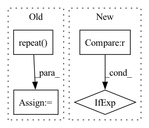

Pattern ID :2821

Before Change
self.item_list_length_field: torch.tensor(item_list_length),
}
if self.position_field:
new_dict[self.position_field] = torch.arange(self.max_item_list_len).repeat(new_length).view(new_length, -1)
iid_value = self.dataset.inter_feat[self.iid_field]
time_value = self.dataset.inter_feat[self.time_field]
for i, (index, length) in enumerate(zip(item_list_index, item_list_length)):
After Change
list_len = self.dataset.field2seqlen[list_field]
shape = (new_length, list_len) if isinstance(list_len, int) else (new_length, ) + list_len
list_ftype = self.dataset.field2type[list_field]
dtype = torch.int64 if list_ftype in [FeatureType.TOKEN, FeatureType.TOKEN_SEQ] else torch.float64
new_dict[list_field] = torch.zeros(shape, dtype=dtype)
value = self.dataset.inter_feat[field]
In pattern: SUPERPATTERN
Frequency: 3
Non-data size: 4
Instances
Fragment ID: 11245226
Project Name: rucaibox/recbole
Commit Name: ff2c1876a9a57351382828ca1246646ee01aff42
Time: 2020-12-06
Author: 297086016@qq.com
File Name: recbole/data/dataloader/sequential_dataloader.py
M Class Name: SequentialDataLoader
N Class Name: SequentialDataLoader
M Method Name: augmentation(4)
N Method Name: augmentation(5)
M Parent Class: AbstractDataLoader
N Parent Class: AbstractDataLoader
M File Name: recbole/data/dataloader/sequential_dataloader.py
N File Name: recbole/data/dataloader/sequential_dataloader.py
M Start Line: 114
M End Line: 140
N Start Line: 126
N End Line: 145
'>
Before Change
visual_emo_vecs = self.affineVisual(text_emo_vecs)
audio_emo_vecs = self.affineAudio(text_emo_vecs)
text_emo_vecs = text_emo_vecs.unsqueeze(0).repeat(batch_size, 1, 1)
visual_emo_vecs = visual_emo_vecs.unsqueeze(0).repeat(batch_size, 1, 1)
audio_emo_vecs = audio_emo_vecs.unsqueeze(0).repeat(batch_size, 1, 1)
text_attn_feature = self.attention(output_text, text_emo_vecs)
visual_attn_feature = self.attention(output_visual, visual_emo_vecs)
audio_attn_feature = self.attention(output_audio, audio_emo_vecs)
// TODO: try residual connection
logits = self.out(torch.cat((text_attn_feature, visual_attn_feature, audio_attn_feature), dim=1))
return logits
After Change
text_emo_vecs_origin = self.textEmoEmbs(torch.LongTensor(list(range(self.num_classes))).to(self.device))
text_emo_vecs = text_emo_vecs_origin.unsqueeze(0).repeat(batch_size, 1, 1)
text_attn_weights = self.attention(output_text, text_emo_vecs)
logits = text_attn_weights if logits is None else logits + text_attn_weights
if "a" in self.modalities:
output_audio, _ = self.RNNs[1](X_audio)
'>
Fragment ID: 11245230
Project Name: wenliangdai/modality-transferable-mer
Commit Name: b0e565d11d6b3bf9f65fb1dcbdc8c641a2bc8054
Time: 2020-06-10
Author: wenliang.dai.1995@gmail.com
File Name: src/models/temp.py
M Class Name: EmotionEmbAttnModel
N Class Name: EmotionEmbAttnModel
M Method Name: forward(4)
N Method Name: forward(4)
M Parent Class: nn.Module
N Parent Class: nn.Module
M File Name: src/models/temp.py
N File Name: src/models/temp.py
M Start Line: 53
M End Line: 79
N Start Line: 70
N End Line: 96
'>
Before Change
if self.output_layer.bias is not None:
new_bias = torch.mean(self.output_layer.bias).unsqueeze(1).T
if n_classes_to_add > 1:
new_bias = new_bias.unsqueeze(1).T.repeat(1, n_classes_to_add, 1).squeeze()
self.output_layer.bias = nn.parameter.Parameter(
torch.cat([self.output_layer.bias, new_bias], axis=0)
)
After Change
new_bias = torch.empty(n_classes_to_add)
fan_in, _ = nn.init._calculate_fan_in_and_fan_out(
self.output_layer.weight)
bound = 1 / math.sqrt(fan_in) if fan_in > 0 else 0
nn.init.uniform_(new_bias, -bound, bound)
self.output_layer.bias = nn.parameter.Parameter(
torch.cat([self.output_layer.bias, new_bias], axis=0)
'>
Fragment ID: 11245219
Project Name: online-ml/river-torch
Commit Name: 569c438c27a92f58d761de6d54cc27c9cb1ec88f
Time: 2022-09-28
Author: cedric.kulbahc@googlemail.com
File Name: river_torch/classification/classifier.py
M Class Name: Classifier
N Class Name: Classifier
M Method Name: _add_output_features(2)
N Method Name: _add_output_features(2)
M Parent Class: DeepEstimator,base.Classifier
N Parent Class: DeepEstimator,base.Classifier
M File Name: river_torch/classification/classifier.py
N File Name: river_torch/classification/classifier.py
M Start Line: 308
M End Line: 311
N Start Line: 303
N End Line: 312